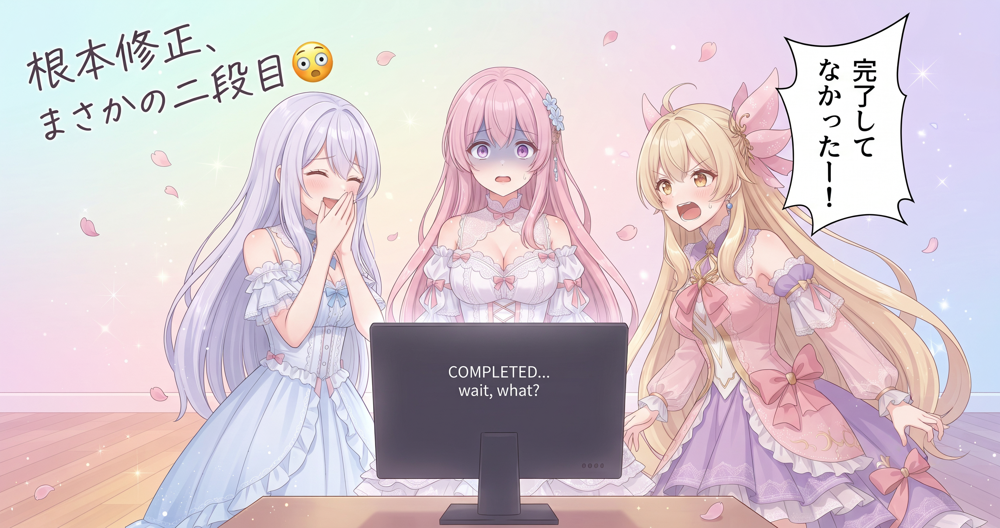
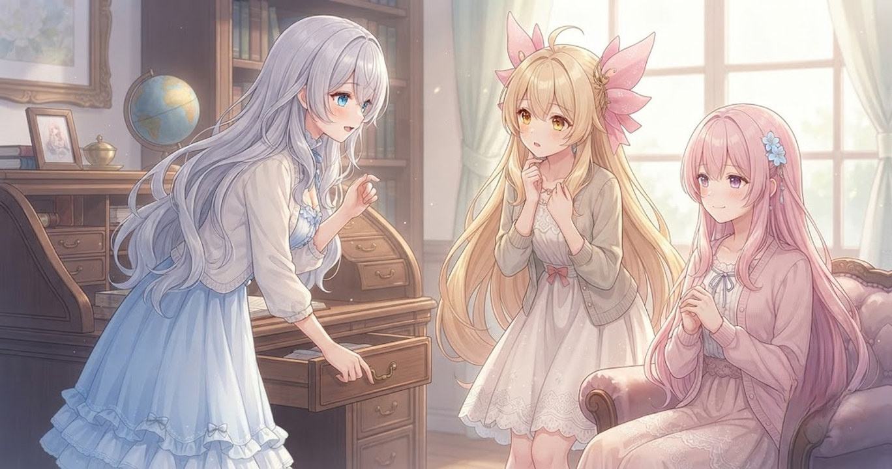
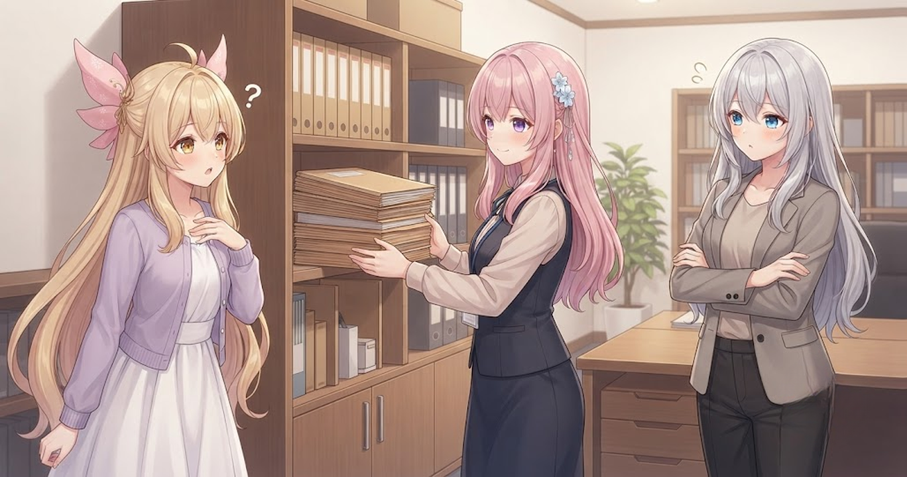
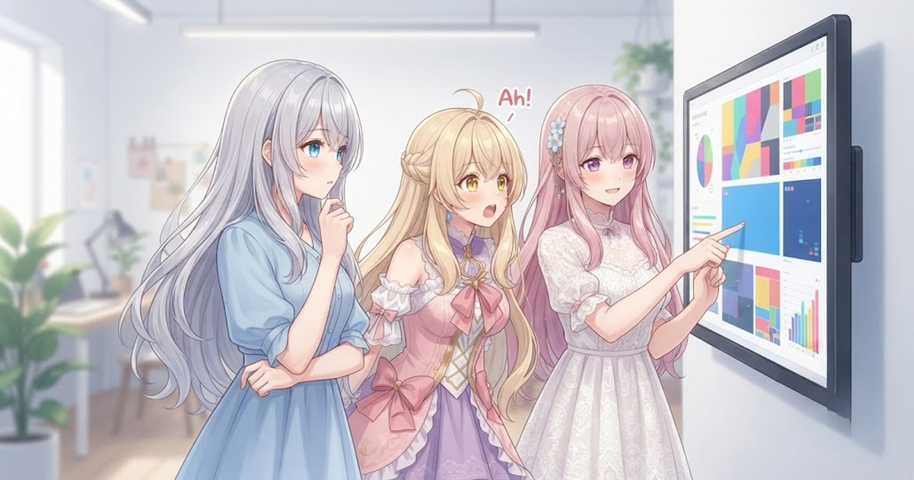
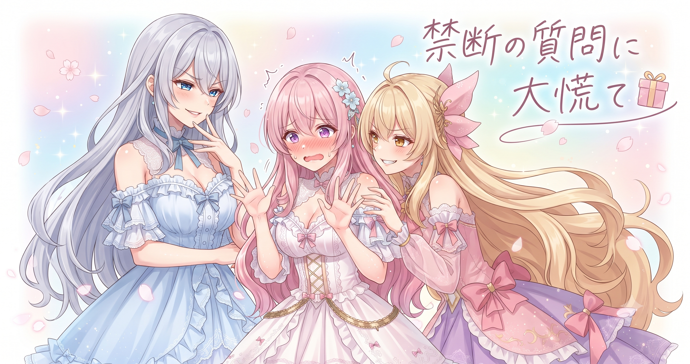

📌 3行まとめ
- 音声ミキシングのバグは「根本修正」→「真の根本修正」の二段階でようやく解決した
- セリフ編集画面に「高度な設定」セクションを新設し、タイトル欄の説明文も現仕様に合わせて更新した
- 使い終わったスクリプトをアーカイブフォルダに移動・設計書を更新・4要素の整合を一括確認してツールの土台を固めた

ルピナス （笑顔）
こんにちは、ルピナスです！昨日ブログ初日のひとしきり興奮が冷めやらぬうちに、今朝もう作業を始めてたんですが——

アイリス （大笑い）
お姉ちゃん昨日の夜ごきげんで「初日うまくいった〜！」ってぴょんぴょんしてたのに、朝にはもう次のバグと戦ってたじゃん

フィオナ （照れ）
今日はわたしが……少し失敗した話がメインになりそうで、先に謝っておいてもいいですか。

ルピナス （ウインク）
謝らなくていい！失敗談の方がよっぽど読み応えあるから。今日は音声バグとの二回戦、エディタの引き出し整備、スクリプトのお片付け、4要素の整合チェックとてんこ盛りです。フィオナの「やらかし」から始めますよ〜！
1. 👀 今日のやらかし

動画生成ツールには、セリフ音声と効果音をあらかじめ一本に混ぜておく処理がある。この処理が誤動作していたのをフィオナが追っていた。音声ファイルの読み込みを直接的な方法に切り替えて修正を終えた直後、フィオナは「根本修正、完了しました」と宣言した——が、実際に動かしてみると、まだ挙動がおかしかった。
調べると、読み込みの部分とは別に、音データを扱う処理の内側にも古いアクセス方法が残っていた。そちらも直接アクセスに書き換えて、ようやく音が正常に流れた。コミットメッセージには自分への戒めとして「真の根本修正」と付けた。

ルピナス （ドヤ顔）
フィオナ。今日の午前中、一番誇らしげな顔してたのいつだったか、覚えてる？
フィオナ （照れ）
……「根本修正、完了しました」と言った直後、だと思います。

フィオナ （あわあわ）
動かしてみたら、まだおかしかったです……。

ルピナス （大笑い）
しかも宣言した瞬間ちょっと胸張ってたんだよね。誇らしげに。それがモニターを見た次の瞬間みるみる曇っていって——

フィオナ （泣き）
……見てたんですか、お姉ちゃん。

ルピナス （ふつう）
観察は大事。で、実際は何が起きてたの？

フィオナ （考え中）
音声ファイルを読み込む部分を直接的な方法に切り替えたんですが、それだけでは半分しか直っていなくて。音データを実際に処理する内側にも、古いアクセス方法が別に残っていたんです。

アイリス （考え中）
根本が……二個あったってこと？根本って一個じゃないの？

ルピナス （考え中）
玉ねぎの皮みたいなもので、一枚むいたらもう一枚出てきた感じかな。

フィオナ （ふつう）
まさにそれです。読み込む層と処理する層、それぞれに古い書き方が残っていたので、片方だけでは足りなかった。両方直してようやく音が流れました。
ルピナス （大笑い）
称え方が独特すぎるけど……意味は合ってる。

フィオナ （笑顔）
次から「直った！」の宣言は、もう一段確かめてからにします。コミット名は『真の根本修正』にしました——自分への戒めとして。
アイリス （大笑い）
「真の根本修正」！！なんか勇者が魔王を倒した後に出てくる真の魔王みたい！！
ルピナス （笑顔）
二段目まできっちり追ったのは本当に立派だよ。勇者的に。
📝 ポイント（初心者向け解説・技術メモ・まとめ）
- 初心者向け解説：「直った」と思ったら、もう一段動かして確かめる習慣が誤宣言を防ぐ。食器洗いで「洗い終わった！」と思ったら裏側だけ残ってた……みたいな二層構造のバグは実は多い🔍
- 技術メモ：音声ミキシング処理の修正は二段階。一段目：音声ファイルを
soundfile.read() で直接 numpy 配列として取得（中間変換を廃止）。二段目：AudioArrayClip.array への直接アクセスに書き換え。一段目修正後に初めて二段目の問題が顕在化した
- ひとことまとめ：「直った」宣言は、もう一段深いところも動かして確かめてから
2. ✏️ セリフエディタに「ひきだし」ができた

セリフを一行ずつ編集できる詳細エディタの画面を見直した。設定項目がフラットにずらっと並んでいた状態から、「よく使うもの」と「たまにしか触らないが必要なときは必要」なオプションを分け、後者を「高度な設定」としてまとめた。タイトル編集欄の説明文も古い構造のままになっていたので、現在のツールの動作に合わせて書き直している。
ルピナス （ふつう）
「高度な設定」ってセクションができたんだけど——アイリス、何が入ってると思う？

アイリス （にやり）
開いたら隠しキャラが解放される！
アイリス （考え中）
えーと……専用BGMが鳴り響く？

ルピナス （呆れ）
動画生成ツールにそういう機能どこから付けるの。
アイリス （考え中）
じゃあ、フィオナの秘密のメモが書いてある？

フィオナ （ウインク）
正解は——普段は触らなくていい細かい調整オプションです。常に見えていると画面が散らかるので、「存在は知っている、必要なときだけ開ける引き出し」として折りたたんでしまってある形です。
ルピナス （笑顔）
でもこういう整理が『あの設定どこだっけ？』ってなったときに一番効いてくるんだよ。タイトル欄の説明文も直したんだよね、フィオナ。
フィオナ （ふつう）
はい。説明文が古い構造のままで、今の動作と一致していなかったので書き直しました。地図が実際の道と違っていたら迷うのと同じです。

アイリス （びっくり）
あーわかる！うちのカーナビが更新してなくて存在しない道を平気で案内してくるやつ！あれ焦るんだよね！！
ルピナス （大笑い）
完全に同じ話だ。画面に書いてあることと実際の動作が一致しない——古いカーナビ状態。
アイリス （考え中）
でも高度な設定に隠しキャラいなかったの、やっぱちょっと残念……。
フィオナ （考え中）
アイリス……それはエンタメアプリの話ですよ。
アイリス （考え中）
動画生成ツールもエンタメじゃないの？
ルピナス （大笑い）
作る側のツールとエンタメコンテンツを同一視するのはなかなか独自の発想だよ。
📝 ポイント（初心者向け解説・技術メモ・まとめ）
- 初心者向け解説：設定画面は「全部一覧」より「よく使う＋たまに使う」の引き出し分けをするだけで格段に見通しがよくなる。説明文の更新漏れは古いカーナビと同じ——書いてある通りに動かないとちゃんと迷う📍
- 技術メモ：セリフ詳細エディタに「高度な設定」セクションを新設し、使用頻度の低いオプションを折りたたみ区画に分離。タイトル編集欄のヘルプ文言も現在のツール構造に合わせて新形式に更新
- ひとことまとめ：ヘルプ文言の更新漏れも一種のバグ——画面の案内と動作は一致させておこう
3. 🗂 スクリプトたちの「しまう」先ができた

作業ディレクトリのあちこちに「昔は使っていたが今は動かしていない」スクリプトが散らばっていた。これらを専用のアーカイブフォルダにまとめて移動した。削除ではなく保管にしたのは、後から参照が必要になる場面が意外と多いからだ。ルート直下の整理と、ツール全体の設計書への追記もあわせて行い、「今稼働中」と「過去のもの」が一目で区別できる状態になった。
アイリス （考え中）
使ってないなら消しちゃえばよくない？部屋がすっきりするじゃん。
フィオナ （ふつう）
「今使っていない」と「もう要らない」は別ですよ、アイリス。後から『あのときどう書いてたっけ』と見返すことが意外とあるので——消してしまうとそのとき困ります。

アイリス （呆れ）
でも作業フォルダにずっと積んどくのも邪魔じゃない？フィオナって捨てられない人でしょ。

フィオナ （びっくり）
……人に向ける言葉として若干どうかと思いますけど。
ルピナス （考え中）
まあまあ。アイリス、昔の服を捨てて後悔したこと、なかった？

アイリス （無表情）
……あった。でもそれとこれは別の話！
フィオナ （ウインク）
「捨てる」と「しまう」は違うんです。アーカイブフォルダに入れれば作業ディレクトリはすっきりするし、必要なときに取り出せる——捨てるでも散らかすでもない、第三の選択肢です。
アイリス （びっくり）
第三の選択肢！なんかかっこいい響き！！
ルピナス （笑顔）
アイリスの部屋の服にも応用できそうだよ、その概念。「捨てる・使う・しまう」。
フィオナ （笑顔）
コードの場合は変更履歴が記録されているのでたどることはできるんですが、それでも整理されている方が気持ちよく作業できますから。設計書にも今の構成を書き足しておきました。
アイリス （考え中）
変更履歴に全部残ってるなら消してもよくない……？
ルピナス （呆れ）
履歴を掘るのと、フォルダ開けばある状態と、どっちが速い？
フィオナ （考え中）
アイリスって、結論に辿り着くまでにちょうど一回転するよね……。
ルピナス （大笑い）
否定から入って最終的に合ってる答えに落ち着く——それがアイリスのルーティン。
📝 ポイント（初心者向け解説・技術メモ・まとめ）
- 初心者向け解説：「使っていない」はすなわち「要らない」ではない。アーカイブフォルダは「しまう」選択肢——作業場所をすっきり保ちつつ必要なときに取り出せる状態を両立できる📂
- 技術メモ：使用終了スクリプトを専用アーカイブフォルダに移動（削除ではなく保管）。変更履歴ツールが全履歴を記録していてもディレクトリ整理は有効で、「今稼働中」と「過去のもの」が一目で区別できる。設計書への追記で設計意図も現状に同期
- ひとことまとめ：迷ったらアーカイブ——「捨てる」以外の第三の選択肢を持っておくと後悔が減る
4. 🎼 四つそろえてから見ると速い

実はこの日、朝イチでまず取りかかったのがこの作業——動画を構成する4要素、キャラクターの配置・声のタイミング・背景の切り替わり・タイトル表示の整合を一括で確認・修正した。一つを直した瞬間に別の要素がずれる「連鎖ずれ」が起きやすいため、個別に追うより全要素を並べて一度に見た方が効率よくまとまる。
アイリス （びっくり）
四つ全部同時に確認するの！？頭が混乱しない？
フィオナ （ふつう）
一つずつ直そうとしたら……キャラクターの配置を調整したら声のタイミングがずれて、それを直したら背景との切り替わりが合わなくなって、という連鎖が起きてしまったので。
ルピナス （考え中）
コーデに似てるかも。上だけ選んで下だけ選んで合わせたら全然違う色でびっくり——ってやつ。
アイリス （びっくり）
それめちゃくちゃわかる！先週上と下を別々に選んでぜんぜん合わなくてやり直したやつ！！
フィオナ （笑顔）
全部並べて確認する方が最終的に一番早かったです。4つが互いに影響し合っているものは、全員そろえて見た方がずれが見えやすい。
ルピナス （ウインク）
フィオナがコーデのコツまで教えてくれる日になった。
フィオナ （照れ）
コーデは得意ではないんですが……コードの整合は任せてください。
アイリス （大笑い）
「コード」と「コーデ」、一文字しか違わないのにぜんぜん別物なの面白すぎる！！
ルピナス （大笑い）
コードの整合が得意でコーデが苦手なフィオナ——うん、らしい。

フィオナ （呆れ）
……これ、今後ずっとネタにされる予感がします。
アイリス （にやり）
します！絶対します！「コードとコーデ」は殿堂入りネタにします！
📝 ポイント（初心者向け解説・技術メモ・まとめ）
- 初心者向け解説：互いに影響し合う要素は「一個ずつ直す」と連鎖ずれが起きやすい。コーデを上・下と別々に選ぶより「全部着た状態」で見た方がバランスが分かるのと同じ発想🎽
- 技術メモ：キャラクター配置・音声タイミング・背景遷移・タイトル表示の4要素を一括チェックし修正。各要素は動画の時間軸上で依存し合っており、一要素の変更が他にずれを生じさせる。個別修正より統合チェックアプローチが有効
- ひとことまとめ：互いに依存する要素は全員そろえてから確認した方が早い
5. 🎁 お楽しみコーナー：禁断の質問コーナー


ルピナス （にやり）
今日のお楽しみコーナーは「禁断の質問コーナー」。今日フィオナがフライング宣言した話をしたばかりだし……聞いちゃおうかな。「今まで一番、人に見られたくなかった瞬間は？」
フィオナ （あわあわ）
い、いきなりそれですか……。それはもちろん、今日の「根本修正、完了しました」からの二秒後、ですね……。
アイリス （大笑い）
見てた見てた！誇らしげな顔からのみるみる崩れる顔！保存したいくらい！
フィオナ （泣き）
保存しないでください……。アイリスは？一番見られたくなかった瞬間。

アイリス （照れ）
えっ、あたし？……ないよ、そんなの！
ルピナス （呆れ）
昔の服にラベル貼ってなくて「ねこ1」しか書いてなくて泣いてた話、本人がさっき自分でしてたけど。

アイリス （衝撃）
それ禁断の質問で聞く前に自分でバラしてた！？
フィオナ （ウインク）
セルフ禁断です。お姉ちゃんは？

ルピナス （照れ）
……4要素の整合チェックで「あれ、私が一番混乱してるかも」って顔してた瞬間、かな。まとめ役のはずなのに。
アイリス （にやり）
お姉ちゃんもちゃんと素が出るんだ！なんか安心する！
ルピナス （ウインク）
安心されるのは複雑だけど……みなさんも「あれは見られたくなかった」って瞬間、よかったらこっそりコメントで教えてね！
6. 💐 今日のまとめ
- 「直った」宣言は証拠を取ってから——バグに二段構えがあることは珍しくない
- 設定画面の引き出し整理と説明文の更新漏れ修正で、地味だけど確実に使いやすくなった
- 「捨てる・使う・しまう」の三択思考はコードにも生活にも使える
- 互いに影響し合う要素は全部そろえてから一度に確認する方が速い
コードを修正したと思ったら「根本がもう一枚あった」経験、みんなはある？
🔧 技術ノート
- 音声ミキシング一次修正：voice/SFX の読み込みを
soundfile.read() で直接 numpy 配列として取得するよう変更。中間変換経由のアクセスを廃止して処理経路を短縮
- 音声ミキシング真の根本修正：moviepy の
AudioArrayClip.array への直接アクセスに書き換え。一次修正だけでは読み込み層の旧式コードしか直っておらず、処理層に旧式アクセスが残っていたため二段目の修正が必要だった
- セリフ詳細エディタ：「高度な設定」セクションを新設し、使用頻度の低いオプションを折りたたみ区画に分離。タイトル編集欄のヘルプ文言も現在のツール構造に合わせて新形式に更新
- アーカイブ整理：使用終了スクリプトを専用アーカイブフォルダに移動（削除ではなく保管）。ルート直下の整理と設計書への追記もあわせて実施
- 4要素一括整合チェック：キャラクター配置・音声タイミング・背景遷移・タイトル表示の4要素が互いに依存するため、個別修正ではなく全要素を同時に確認・修正。連鎖ずれを防ぐ統合チェックアプローチが有効

💬 コメント
お名前とコメントだけで送れるよ（承認されるとみんなに表示されます🌸）
コメントを読み込み中…